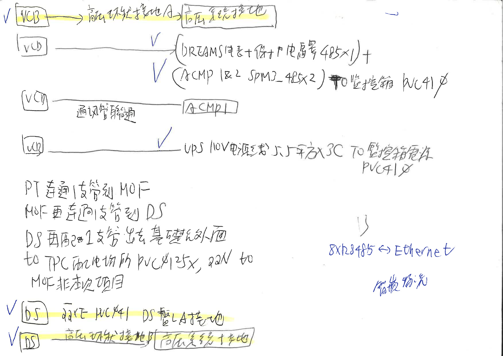

專項作業參考 / 2507_001
VCB／DS
配管與接地筆記
將設備接地、監控通訊與配管路徑集中對照，並保留手寫原稿供逐項核對。
01
設備與施工內容對照
依原稿分為接地、通訊、電源及盤間連通。
| 設備／項目 | 連接或用途 | 原稿規格／註記 |
|---|---|---|
| VCB · 接地 | 高壓外殼接地 → 高壓系統接地 | 原稿未註明接地線徑。 |
| VCB · 監控通訊 | DREAMS 電表、保護電驛 → 監控箱 ACMP 1 & 2 與另一設備之通訊 → 監控箱 | 原稿：485 × 1 ＋ 485 × 2；PVC 41φ。 待確認 第二組設備縮寫近似「SPM…」，請核對原稿。 |
| VCB · 盤間配管 | VCB ↔ ACMP1 | 通訊管聯通；原稿未另標管徑。 |
| VCB · UPS 電源 | UPS（110V 電源）→ 監控箱電源 | 5.5 平方 × 3C；PVC 41φ。 |
| DS · LA 接地 | DS 盤 LA 接地 | 原稿：「22×E」「PVC φ41」。 待確認 「22×E」之線材標示與單位請依圖說確認。 |
| DS · 接地 | 高壓外殼接地 → 高壓系統接地 | 原稿未註明接地線徑。 |
02
PT／MOF／DS 配管路徑
依原稿敘述順序呈現。
- 1
PT → MOF
PT 連通 1 支管到 MOF。
- 2
MOF → DS
MOF 再連同 1 支管到 DS。
- 3
DS → 基礎側面 → TPC 配電場所
DS 再配 1 支管出去基礎側面，往 TPC 配電場所。
待確認 原稿此行另有「2…」「PVC φ25×，22N」等手寫標示，管徑、數量與線材規格待核對，未併入確定規格。
原稿範圍註記
「MOF 非本次項目」。此註記依原稿保留，實際工作範圍仍請核對專案文件。
03
監控通訊補充註記
原稿右側藍筆補充。
RS485 ↔ Ethernet
待確認 原稿近似「8×RS485 ↔ Ethernet」，下方註記近似「轉換器」。數量及設備名稱保留待確認，不推定轉換器型號或接線方式。
04
手寫原稿核對
保留原稿全文與黃底、藍筆註記；點擊圖片可開啟大圖。
